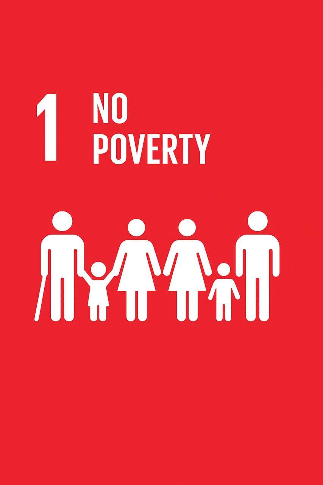

Understanding The Path Out Of Poverty
A path out of poverty can only be achieved through education, innovation, and collective responsibility.
Every small effort contributes to a brighter and more equal future.
Together we can create opportunities for a better tommorow.
A path out of poverty can only be achieved through education, innovation, and collective responsibility.
Every small effort contributes to a brighter and more equal future.
Economic strain: Reduced economic growth, increased healthcare costs, and strain on social services.
inequality: Widening gaps between rich and poor, leading to social unrest and instability.
Limited access to education: Perpetuating cycles of poverty and limiting opportunities for social mobility.
Health disparities: Poor health outcomes, increased mortality rates, and reduced life expectancy.
Increased crime rates: Higher rates of crime and violence, affecting community safety and security.
Education and job training programs
empowerment through microfinance and entrepreneurship.
Social safety nets and support services.
Affordable healthcare and nutrition programs.
Community development initiatives.
Access to healthcare, which equip people for better jobs; employment creation and entrepreneurship to generate income; and agricultural improvements for farmers.
Social protection programs, and infrastructure development help reduce vulnerabilities.
Empowering women, promoting good governance, and practicing sustainable development further ensure long-term progress.
By combining these pathways, societies can lift people out of poverty and create opportunities for a better future.